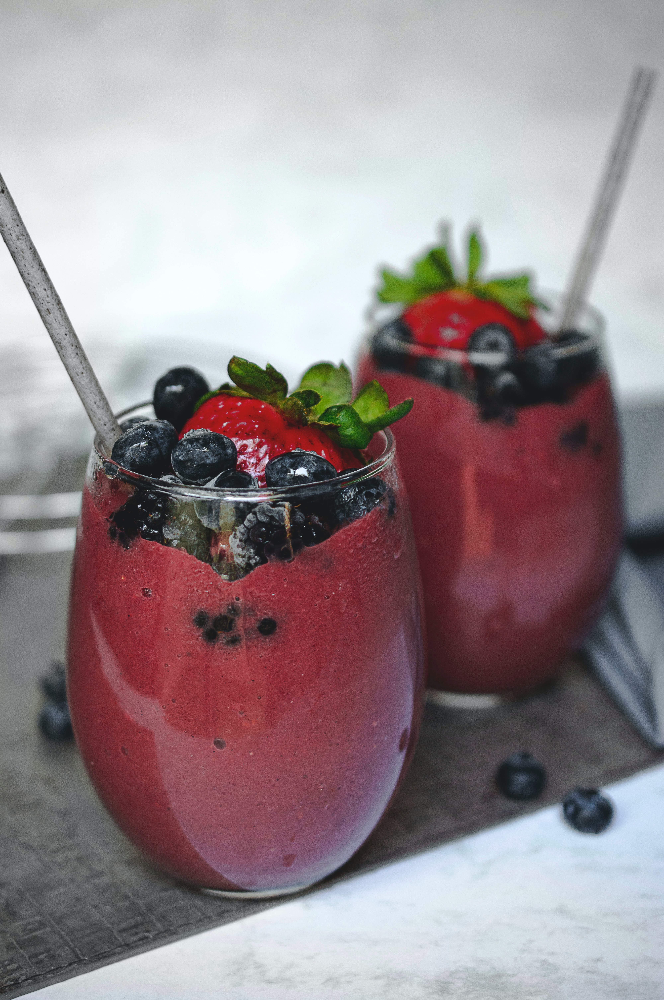

Fruit Smoothie

Description
Just a classic fruit smoothie to enjoy for this upcoming summer!
Ingredients
- 1 Frozen banana, peeled and sliced
- 2 cups frozen strawberries, raspberries, or cherries
- 1 cup milk
- 1/2 cup plain or vanilla yogurt
- 1/2 cup freshly squeezed orange juice
- 2 to 3 tabelspoons honey or to taste
Directions
- Step 1: Put all the ingredients in a blender and process until smooth. Pour into glasses and serve.
- Step 2: Cooks note: For non-dairy smoothies, substitute 1 cup of rice milk for the milk and yogurt. Or, use soy yogurt or milk instead of dairy.